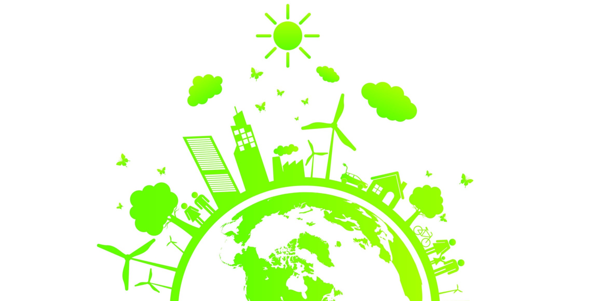

Aprendendo a viver de forma sustentável
É útil ou mesmo possível?
A sociedade humana é um mosaico de culturas e de decisões tomadas dia a dia e minuto a minuto. A insustentabilidade do desenvolvimento atual é um produto de todas essas inúmeras decisões, tomadas por todas as pessoas no planeta: em casa, nas ruas, no local de trabalho. Muitas vezes, eles nem são experienciados como decisões; eles são apenas "a maneira como fazemos as coisas". Nessa perspectiva, faz todo o sentido ensinar às pessoas novos hábitos, não importa quão aparentemente marginais. Não apenas os recursos são economizados, mas a criatividade é desencadeada e a onda de opinião é deslocada para dar maior apoio às iniciativas de sustentabilidade por autoridades públicas, empresas, organizações comunitárias e outras (evidenciadas pelo crescente adoção de contratos públicos ecológicos, responsabilidade social corporativa, preço do carbono, iniciativas de transição e similares).
Há, no entanto, uma condição: a mudança de comportamento precisa resultar de uma decisão consciente e não de uma resposta não refletida. A propaganda simples não faz o trabalho. Embora seja verdade que as pessoas adotaram novos comportamentos como resultado de campanhas de informação - que, como alguns movimentos sociais on-line (como Avaaz.com e diversos sites de petições, petições e comunidades), capacitam o indivíduo, fornecendo fatos convincentes, ligação a interesses comuns. propósito e um processo de ação facilitado - quando a campanha para, a maior parte do comportamento reverte porque o estímulo e o apoio externos se foram. Essa observação é uma explicação razoável para clichês como "Você não pode ensinar novos truques a um cachorro velho", apesar de sua óbvia falta de sentido. No entanto, todos sabemos, refletindo, que freqüentemente mudamos nossos hábitos - freqüentemente como resultado de publicidade ou seguindo familiares e amigos. Então, quais são as chaves que abrem as pessoas para fazer mudanças em suas vidas e como elas se relacionam com o aprendizado para a sustentabilidade? Há duas sugestões: empoderamento e experiência. (MEHLMANN; MCLAREN; POMETUN, 2010, tradução nossa).